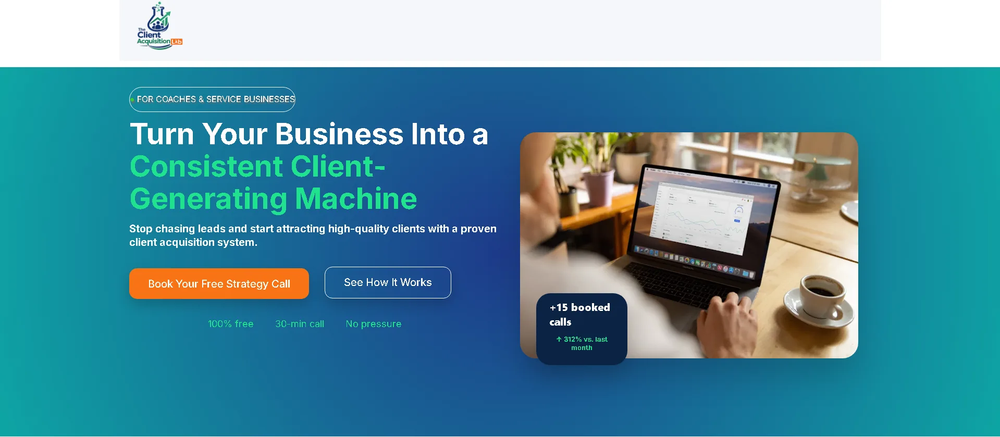
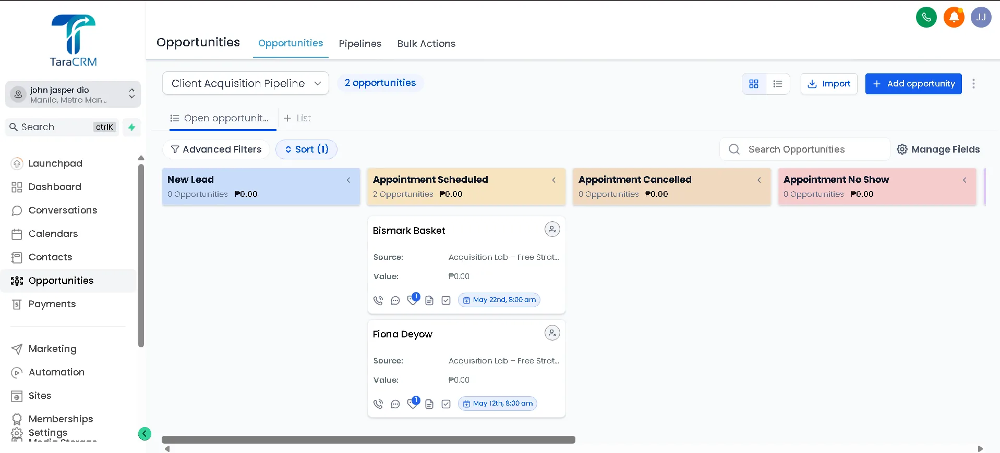
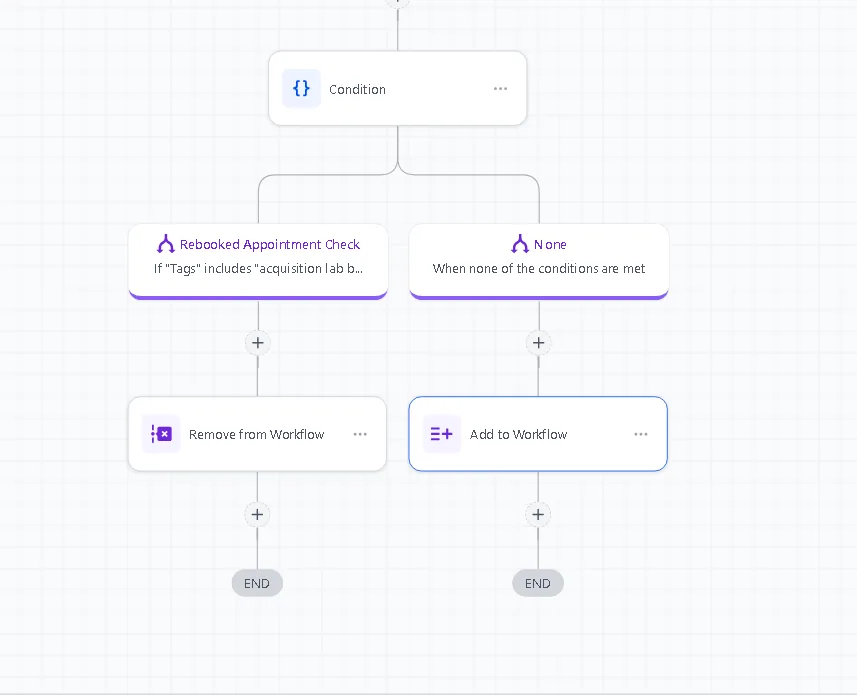

A complete client acquisition and automation system built inside GoHighLevel, showing how a business can capture leads, automate follow-ups, reduce missed appointments, and keep its sales pipeline organized.



What is inside
Frontend funnel
Landing page, booking page, and mobile-responsive funnel design built for appointment conversion.
CRM pipeline
Custom pipeline stages for lead tracking, appointment scheduled, cancelled, no-show, proposal, and closed deals.
Recovery automation
No-show recovery, rebooking logic, nurture follow-ups, tag cleanup, automated pipeline movement, missed call text-back, and automated review requests.
Built in this demo
- Landing page and booking page
- Mobile-responsive funnel design
- CRM pipeline automation
- Appointment reminder workflows
- No-show recovery workflow
- Lead nurture automation
- Automated pipeline stage movement
- Email follow-up automation
- Missed call text-back automation
- Automated review request campaign
Tools
GoHighLevelCRM PipelinesFunnelsWorkflow AutomationAppointment RemindersEmail AutomationLead Management